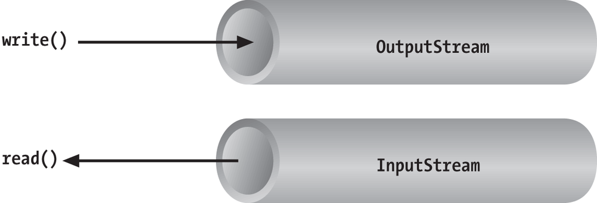
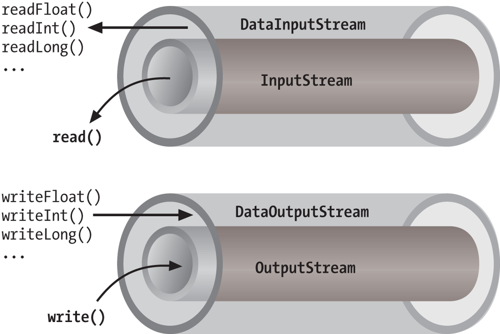
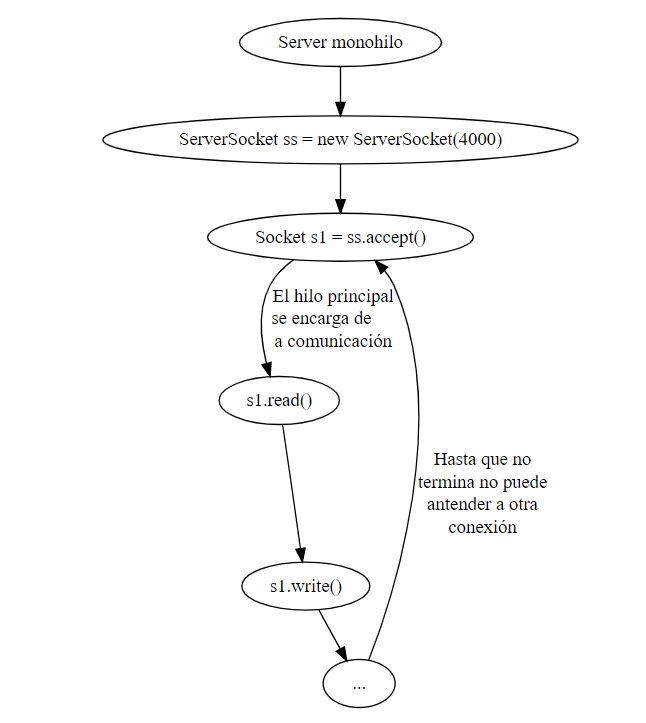
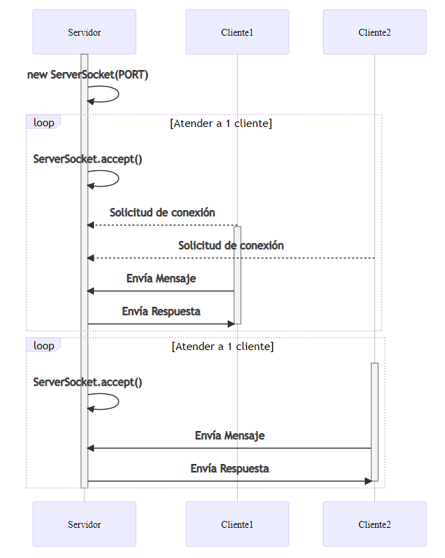
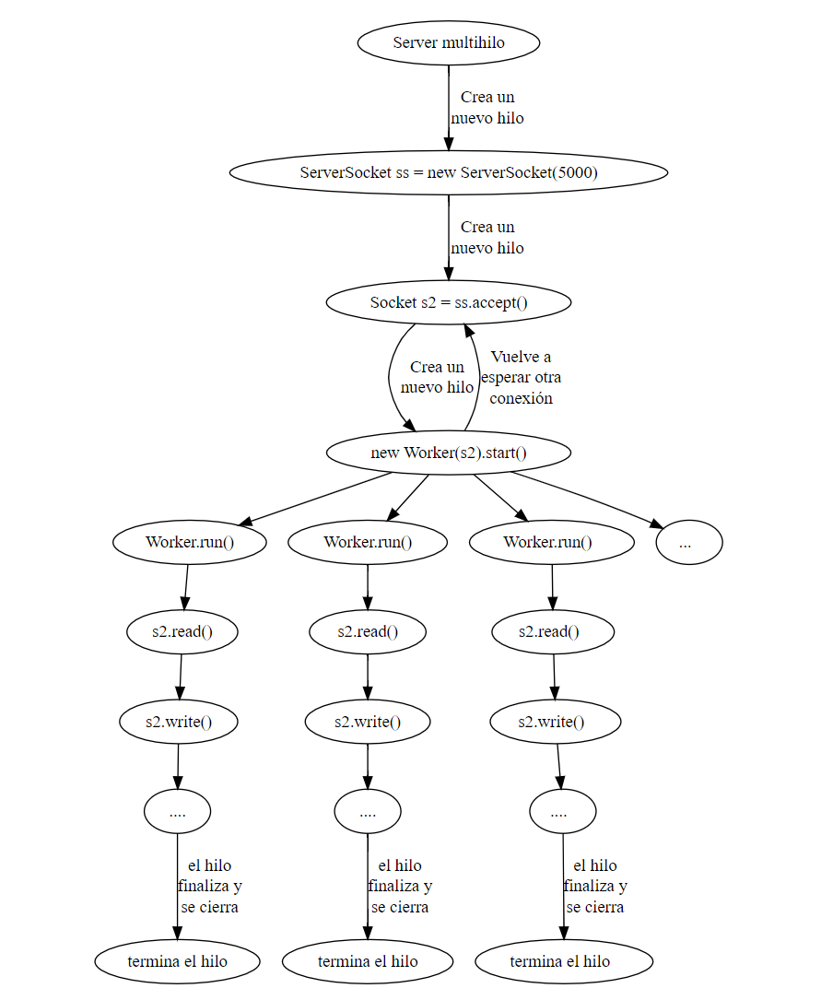
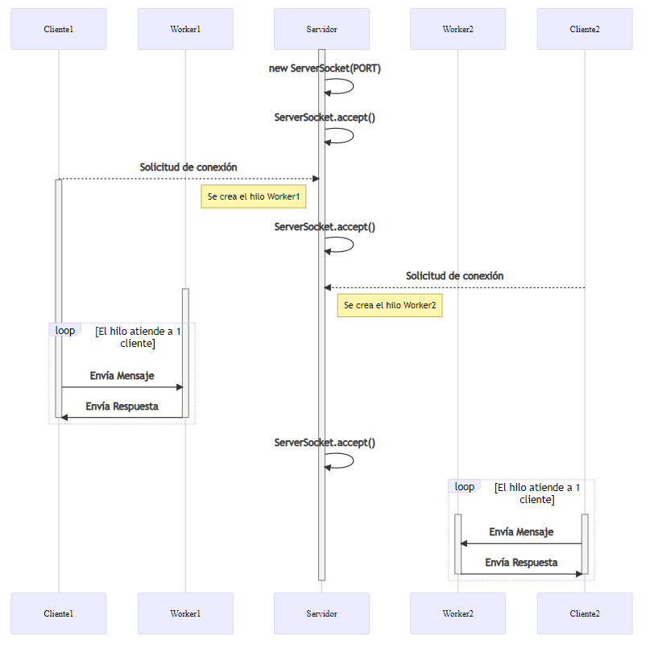

Procesos e Hilos
Para realizar un programa distribuido en el que se pueda realizar una conexión y una comunicación a través de una red de ordenadores no partimos de cero.
La programación en red está fuertemente ligada a la programación multiproceso. Principalmente en la forma de comunicación que ya vimos entre procesos.
Por otro lado, la especialización y el servicio que ofrece un servidor, de forma simultánea a varios clientes, está basada en la división del trabajo en hilos.
Por todo lo comentado, todos los conceptos y conocimientos adquiridos hasta ahora nos sirven de base para avanzar en los contenidos de este tema.
Oracle ha resumido el uso de los sockets en un breve tutorial. Todo lo que podemos ver en ese tutorial lo vamos a ir comentando y ampliando en este apartado del tema
Tutorial de Oracle: All about sockets
La interfaz Java que da soporte a sockets TCP está constituida por las clases ServerSocket y Socket.
ServerSocket: es utilizada por un servidor para crear un socket en el puerto en el que escucha las peticiones de conexión de los clientes. Su método accept toma una petición de conexión de la cola, o si la cola está vacía, se bloquea hasta que llega una petición.
El resultado de ejecutar accept es una instancia de Socket, a través del cual el servidor tiene acceso a los datos enviados por el cliente.
Socket: es utilizada tanto por el cliente como por el servidor. El cliente crea un socket especificando el nombre DNS del host y el puerto del servidor, así se crea el socket local y además se conecta con el servicio.
Esta clase proporciona los métodos getInputStream y getOutputStream para acceder a los dos streams asociados a un socket (recordemos que son bidireccionales), y devuelve tipos de datos InputStream y OutputStream, respectivamente, a partir de los cuales podemos construir BufferedReader y PrintWriter, respectivamente, para poder procesar los datos de forma más sencilla.
Al crear aplicaciones cliente y servidor puede que nos encontremos con varios escenarios, a saber:
Herramientas para definir los protocolos
Dentro de todos los diagramas que ofrece UML, el diagrama de secuencia es el que mejor se adapta para definir los protocolos de comunicación entre clases y las interacciones que se producen.
Para crear estos diagramas existen multitud de herramientas, tanto de escritorio como online. De todas ellas cabe destacar:
Estas herramientas son las que tenéis que usar en las actividades en las que se os pida definir un protocolo de comunicación cliente / servidor.
Si nos centramos en la parte de comunicaciones, la forma general de implementar un cliente será:
public class BasicClient { public static void main(String[] args) throws IOException { Socket socketCliente = null; BufferedReader entrada = null; PrintWriter salida = null; // Creamos un socket en el lado cliente, enlazado con un // servidor que está en la misma máquina que el cliente // y que escucha en el puerto 4444 try { socketCliente = new Socket("localhost", 4444); // Obtenemos el canal de entrada entrada = new BufferedReader( new InputStreamReader(socketCliente.getInputStream())); // Obtenemos el canal de salida salida = new PrintWriter( new BufferedWriter( new OutputStreamWriter(socketCliente.getOutputStream())), true); } catch (IOException e) { System.err.println("No puede establecer canales de E/S para la conexión"); System.exit(-1); } Scanner stdIn = new Scanner(System.in); String linea; // El programa cliente no analiza los mensajes enviados por el // usuario, simplemente los reenvía al servidor hasta que este // se despide con "Adios" try { while (true) { // Leo la entrada del usuario linea = stdIn.nextLine(); // La envia al servidor por el OutputStream salida.println(linea); // Recibe la respuesta del servidor por el InputStream linea = entrada.readLine(); // Envía a la salida estándar la respuesta del servidor System.out.println("Respuesta servidor: " + linea); // Si es "Adios" es que finaliza la comunicación if (linea.equals("Adios")) { break; } } } catch (IOException e) { System.out.println("IOException: " + e.getMessage()); } // Libera recursos salida.close(); entrada.close(); stdIn.close(); socketCliente.close(); } }
Herramientas para simular clientes genéricos
Si sólo tenemos que desarrollar un servidor y no tenemos o no queremos hacer un cliente para las pruebas, tenemos varias herramientas que nos ayudan a hacer de clientes genéricos, útiles para una gran variedad de servidores, incluso para servidores estándar como FTP, HTTP, etc.
La primera herramienta es una aplicación y un protocolo de nivel de aplicación de TCP/IP, es la herramienta Telnet.
Esta herramienta suele venir instalada en los sistemas GNU/Linux y OS X. Sin embargo en los sistemas Windows viene deshabilitada por defecto.
Os dejo un enlace al artículo de Xataka Telnet: qué es y cómo activarlo en Windows 10.
Es importante que lo activéis tanto en clase como en el aula.
La segunda herramienta es NetCat. Es una herramienta muy versátil y potente, ya que no sólo puede hacernos de cliente, sino que también puede servir como servidor.
Como muchas otras herramientas, esta también viene instalada de serie en GNU/Linux y OS X, pero no en Windows. Su uso en los sistemas de Microsoft es algo más controvertido ya que el sistema la detecta como un virus y tenemos que habilitar su uso en el Guardian del SO.
Os dejo también un enlace a este artículo de IONOS ¿Qué es Netcat y cómo funciona?
Si vemos ejemplos en Internet o en tutoriales, podemos observar que hay dos formas mayoritarias de enviar y recibir la información a través de los streams que proporciona un socket.

En cualquier caso, a través de los streams enviamos bytes, que es la forma más básica de generar información, bien sea a través de la red o entre procesos.
Como es complicado gestionar a nivel de bytes toda la información que queremos enviar o recibir, usamos Decorators o Wrappers para enviar tipos de datos de un nivel de abstracción mayor.
En los temas anteriores, cuando hemos tenido que intercambiar información entre procesos, hemos estado usando BufferedReader y PrintWriter. Estas clases trabajan a nivel de Strings, y son muy útiles cuando lo que queremos intercambiar a través de los streams son cadenas de texto.
En los protocolos de comunicaciones, más del 90% de la información que se intercambia, a nivel de protocolo, es en formato texto.
Sin embargo, puede haber ocasiones en las que nos interese trabajar con tipos de datos.
DataInputStream y DataOutputStream proporcionan métodos para leer y escribir Strings y todos los tipos de datos primitivos de Java, incluyendo números y valores booleanos.

DataOutputStream codifica esos valores de forma independiente de la máquina y los envía al stream de más bajo nivel para que los gestione como bytes. DataInputStream hace lo contrario.
Así, podemos trabajar con DataInputStream y DataOutputStream a partir de los streams que nos proporcionan los sockets
// Código en el cliente
DataInputStream dis = new DataInputStream(socket.getInputStream());
dis.readDouble();
// Código en el servidor
DataOutputStream dos = new DataOutputStream(socket.getOutputStream());
dis.writeDouble(number);
Los métodos readUTF() and writeUTF() de DataInputStream y DataOutputStream leen y escriben un String de caracteres Unicode usando la codificación UTF-8.
Elige un método y usa siempre el mismo
Es muy importante no mezclar diferentes wrappers en el mismo sistema. Aunque todos acaban utilizando el InputStream y el OutputStream, las codificaciones y la forma de enviar la información no es la misma.
Por lo que, si usas DataInputStream en el cliente para leer, debes usar DataOutputStream en el servidor para enviar. Además de usar los métodos complementarios para la lectura y escritura, por ejemplo readInt / writeInt.
Información extraída de Learning Java, 4th Edition - O'Reilly
La forma de implementar un servidor será:

public class BasicServer { public static final int PORT = 4444; public static void main(String[] args) throws IOException { // Establece el puerto en el que escucha peticiones ServerSocket socketServidor = null; try { socketServidor = new ServerSocket(PORT); } catch (IOException e) { System.out.println("No puede escuchar en el puerto: " + PORT); System.exit(-1); } Socket socketCliente = null; BufferedReader entrada = null; PrintWriter salida = null; System.out.println("Escuchando: " + socketServidor); try { // Se bloquea hasta que recibe alguna petición de un cliente // abriendo un socket para el cliente socketCliente = socketServidor.accept(); System.out.println("Conexión aceptada: " + socketCliente); // Establece canal de entrada entrada = new BufferedReader( new InputStreamReader(socketCliente.getInputStream())); // Establece canal de salida salida = new PrintWriter( new BufferedWriter( new OutputStreamWriter(socketCliente.getOutputStream())), true); // Hace eco de lo que le proporciona el cliente, hasta que recibe "Adios" while (true) { // Recibe la solicitud del cliente por el InputStream String str = entrada.readLine(); // Envía a la salida estándar el mensaje del cliente System.out.println("Cliente: " + str); // Le envía la respuesta al cliente por el OutputStream salida.println(str); // Si es "Adios" es que finaliza la comunicación if (str.equals("Adios")) { break; } } } catch (IOException e) { System.out.println("IOException: " + e.getMessage()); } salida.close(); entrada.close(); socketCliente.close(); socketServidor.close(); } }
Quedando la secuencia de acciones entre el cliente y el servidor de la siguiente manera

El servidor monohilo se encarga de realizar las operaciones de E/S con el cliente. Hasta que no acaba no puede hacer otro accept y atender a otro cliente.
Local Name Resolver (hosts file)
Deberías saber que DNS traduce nombre de dominio en direcciones IP. Pero, ¿sabes que hay un archivo en tu sistema que puede sobrescribir esas traducciones?
Es el archivo hosts y nos permite mapear nombre de dominio a direcciones IP. Tu archivo HOSTS sólo afecta al comportamiento de tu equipo, por lo que podemos usarlo para crear direcciones personalizadas para IP de nuestra red, o bien para redireccionar / bloquear el acceso a determinados sitios web.
Como puedes imaginar, cambiar de forma incorrecta o maliciosa el contenido del archivo hOSTS puede romper fácilmente el comportamiento de tu conexión a Internet, Así que la modificación del archivo no es trivial para los usuarios, algo que es de agradecer.
El archivo HOSTS está almacenado como un fichero de texto plano en la carpeta del sistema de Windows.
Abre el menú inicio y escribe "notepad".
Pulsa con el botón derecho y selecciona la opción de "Ejecutar como administrador"
En Notepad, ve a Archivo > Abrir y pega la siguiente ruta:
c:\Windows\System32\Drivers\etc\hosts
Ahora ya puedes editar y guardar los cambios en tu archivo HOSTS.
Para mapear un dominio, añade una nueva línea siguiendo los ejemplos que hay en el archivo.
El archivo está en /etc/hosts y debes editarlo con privilegios de administrador.
# Añadimos las siguientes entradas al archivo hosts
## En clase
## - como cliente y servidor ponemos la IP de nuestro equipo.
## - como profesor ponemos la IP del ordenador del profesor
## En casa (la dirección probablemente tenga el formato 192.168.X.X)
## - como cliente, servidor y profesor ponemos la IP de nuestro equipo.
# En nuestras actividades, para no tener que ir cambiando las direcciones IP, usaremos
# siempre estos nombres de dominio, así los programas funcionarán tanto en clase como
# en casa.
10.100.XX.1 cliente.psp
10.100.XX.1 servidor.psp
10.100.0.1 profesor.psp
Si queremos que un servidor pueda atender varias peticiones de forma simultanea, debemos usar hilos para dotarle de esa capacidad.
El flujo básico ahora cambiaría para adaptarse a este formato
while (true) {
Aceptar la conexión obteniendo un objeto de la clase Socket;
Crear un thread para que se encargue de la comunicación con ese cliente, es decir,
para que gestione el socket obtenido en el accept.;
}

El servidor multihilo crea un nuevo hilo que se encarga de las operaciones de E/S con el cliente. Mientras tanto puede esperar la conexión de nuevos clientes con los que volverá a hacer lo mismo.
El servidor multihilo se ayuda de una clase Worker que hereda de Thread, pudiendo así ejecutarse concurrentemente con el hilo principal.
Esta clase Worker es la encargada de realizar toda la comunicación con el cliente y el servidor. Para poder hacerlo, en su constructor recibe el Socket que se crea cuando se recibe la conexión de un cliente ServerSocket.accept().
public static final int PORT = 4444; public static void main(String[] args) { // Establece el puerto en el que escucha peticiones ServerSocket socketServidor = null; try { socketServidor = new ServerSocket(PORT); } catch (IOException e) { System.out.println("No puede escuchar en el puerto: " + PORT); System.exit(-1); } Socket socketCliente = null; System.out.println("Escuchando: " + socketServidor); try { while (true) { // Se bloquea hasta que recibe alguna petición de un cliente // abriendo un socket para el cliente socketCliente = socketServidor.accept(); System.out.println("Conexión aceptada: " + socketCliente); // Para seguir aceptando peticiones de otros clientes // se crea un nuevo hilo que se encargará de la comunicación con el cliente new Worker(socketCliente).start(); } ... }
Y esta sería una implementación estándar de un worker
public class Worker extends Thread { private Socket socketCliente; private BufferedReader entrada = null; private PrintWriter salida = null; .... @Override public void run() { try { // Establece canal de entrada entrada = new BufferedReader(new InputStreamReader(socketCliente.getInputStream())); // Establece canal de salida salida = new PrintWriter(new BufferedWriter(new OutputStreamWriter(socketCliente.getOutputStream())), true); // Realizamos la comunicación entre servidor y cliente // **** ES LO QUE CAMBIA EN CADA EJERCICIO **** // Hacemos una recepción de información desde el cliente String mensajeRecibido = entrada.readLine(); System.out.println("<-- Cliente: " + mensajeRecibido); // Hacemos un envío al cliente String mensajeEnviado = "Mensaje enviado desde el servidor al cliente"; salida.println(mensajeEnviado); System.out.println("--> Cliente: " + mensajeEnviado); } .... }
Quedando ahora la secuencia de acciones entre el cliente y el servidor de la siguiente manera

Ejecución de múltiples clientes desde línea de comandos
Para poder lanzar varias aplicaciones java a la vez, la forma más correcta de hacerlo es desde una terminal de comandos. Esto nos permite poder pasarle argumentos a todas las clases, no sólo a la que está marcada como principal en el proyecto.
Aquí tenemos dos posibilidades, ejecutar las clases individualmente, tal y como hacemos desde el IDE o bien lanzar las clases desde un archivo JAR.
En ambos casos, necesitamos haber compilado y construido el proyecto (F11 ó Shift+F11 en Netbeans).
Ejecución de clases individuales
Lo primero, tal y como se ha indicado anteriormente, debemos tener las clases compiladas.
A continuación, al igual que hacíamos con los procesos, debemos ubicarnos en la carpeta build/classes del proyecto.
Desde ahí, ejecutaremos
build/classes$ java psp.actividades.U4AX_ClaseServidor 5566
los valores que ponemos a continuación del nombre de la clase son los parámetros que la clase recibirá en el args[] de su método main.
y para la clase o clases que no sean las principales
build/classes$ java psp.actividades.U4AX_ClaseSCliente localhost 5566
Si queremos lanzar más de un cliente, repetiremos el comando desde otra ventana de comandos.
Lanzar las clases desde un archivo JAR
Lo primero, tal y como se ha indicado anteriormente, debemos tener el proyecto construido
A continuación, y a diferencia del caso anterior, debemos ubicarnos en el directorio donde esté el archivo JAR. Si no lo hemos movido, estará en la carpeta dist del proyecto.
Desde ahí, ejecutaremos, para la clase principal del proyecto
dist$ java -jar U4AX_ProyectoClienteServidor.jar 5566
dist$ java -cp U4AX_ProyectoClienteServidor.jar psp.actividades.U4AX_ClaseServidor 5566
los valores que ponemos a continuación del nombre de la clase son los parámetros que la clase recibirá en el args[] de su método main.
y para la clase o clases que no sean las principales
dist$ java -cp U4AX_ProyectoClienteServidor.jar psp.actividades.U4AX_ClaseCliente localhost 5566
Si queremos lanzar más de un cliente, repetiremos el comando desde otra ventana de comandos.